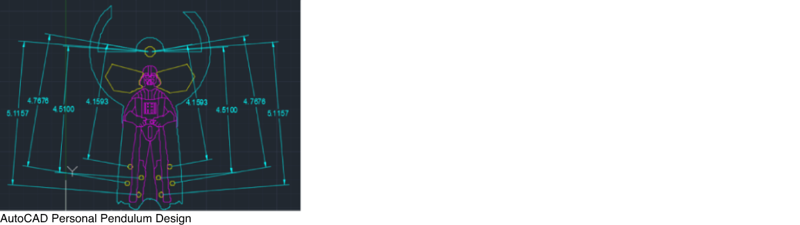
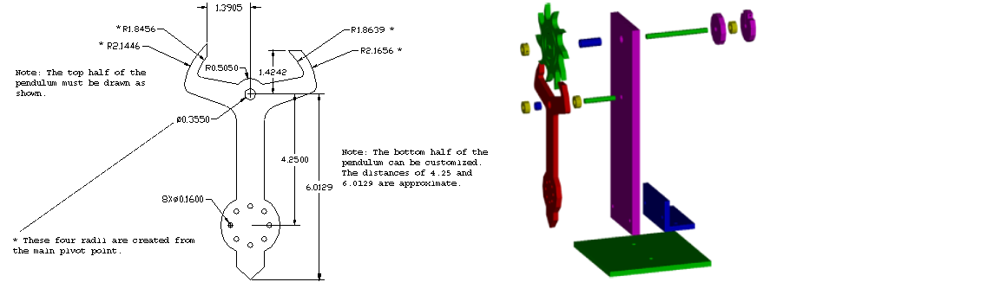
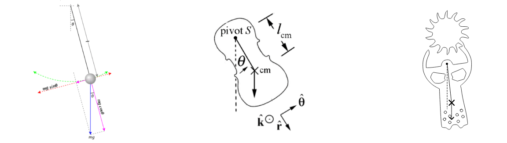

Pendulum Project
Why the Pendulum?
The MAE 3 Introduction to Engineering Graphics and Design pendulum project centers around the analysis and construction of the escapement wheel and pendulum. The project helped me apply design philosophies and mechanical skills, such as the fabrication and the assembly of parts through the use of drill presses, power drills, taper taps, and the LaserCAMM. It also expanded my Fusion 360 and AutoCAD skills to design and analyze components. The three main components of the pendulum that I had to fabricate were the escapement wheel, the pendulum, and the counterweight. The escapement wheel locks and pushes the pendulum to swing back and forth. The counterweight allows the pendulum to overcome friction by creating a moment. The pendulum’s moment of inertia influences the period and frequency at which the pendulum swings.
Two Methods of Analysis
In the timing analysis of the pendulum clock, two theoretical methods were utilized. The first method is the point mass assumption, which condenses the mass of the pendulum to a single point and uses the length of the center of mass as the length of the pendulum. This method of analysis omits friction and assumes that the pendulum swings with a small angle of oscillation and has its entire mass at a single point. The second theoretical method used was the rigid body assumption. The rigid body assumption takes the shape of the pendulum, and thus rotational inertia, into account. However, this method also does not consider friction and assumes a small angle of oscillation.
The Results
When designing the pendulum component, I wanted to stick with a symmetrical design that would yield results that would reflect the results found in my mathematical analyses. In my mathematical analysis, it was determined that the rigid body assumption proved to be significantly more accurate than the point mass assumption. The true rate of revolution was found to be 9.783 seconds per revolution. The rigid body assumption predicted that the time of one revolution of the escapement wheel would be 9.434 seconds and had an error percentage of 3.70%. The point mass assumption predicted that the time of one revolution of the escapement wheel would be 7.789 seconds and had an error percentage of 25.59%. Furthermore, during the evaluation of my pendulum by the professor, I demonstrated that my design is able to function with both counterweight nuts and with only one counterweight nut. The detailed etching on the surface of the pendulum also received additional credit.